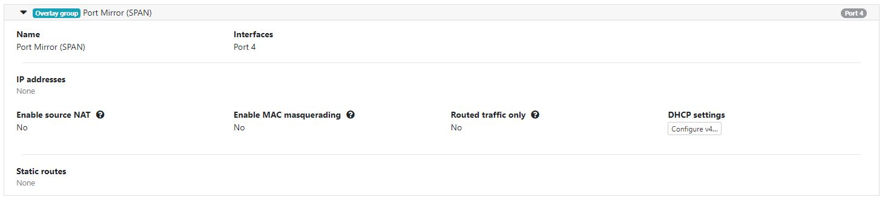
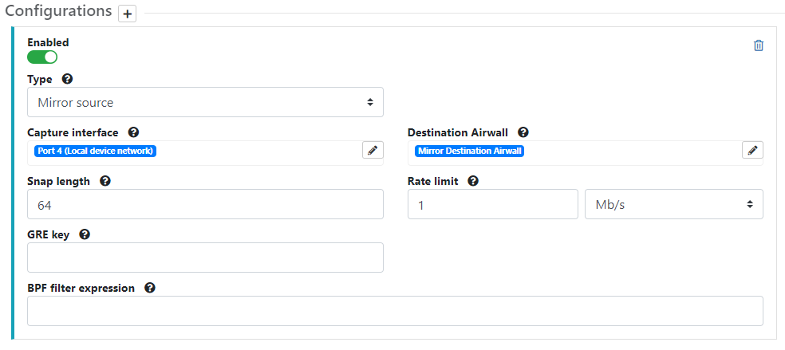

Mirror non-Airwall traffic to an Overlay port group
To capture mirrored non-Airwall traffic, you can configure an Overlay Port Group on a Mirror Source Airwall Gateway, which then sends network information to the Mirror Destination Airwall Gateway.
For this scenario, you need to add an overlay port group to capture non-Airwall traffic and a Mirror Source port mirroring configuration that captures the mirrored traffic on that port.
If you use GRE Transparent Ethernet Bridging, ERSPAN type II or ERSPAN type III – You can use GRE key or Session ID to identify which source the packets arrived on.
-
Set up an Overlay
port group on a Mirror Source Airwall Gateway to
capture the non-Airwall
traffic being collected by your network:

-
Add a Port Mirroring Configuration on the same Airwall Gateway,
selecting the port you configured as your Port Mirror (SPAN) Overlay group above
as the Capture interface, and the Mirror Destination:

For details on how, see Configure Airwall Gateways to act as the Mirror Sources